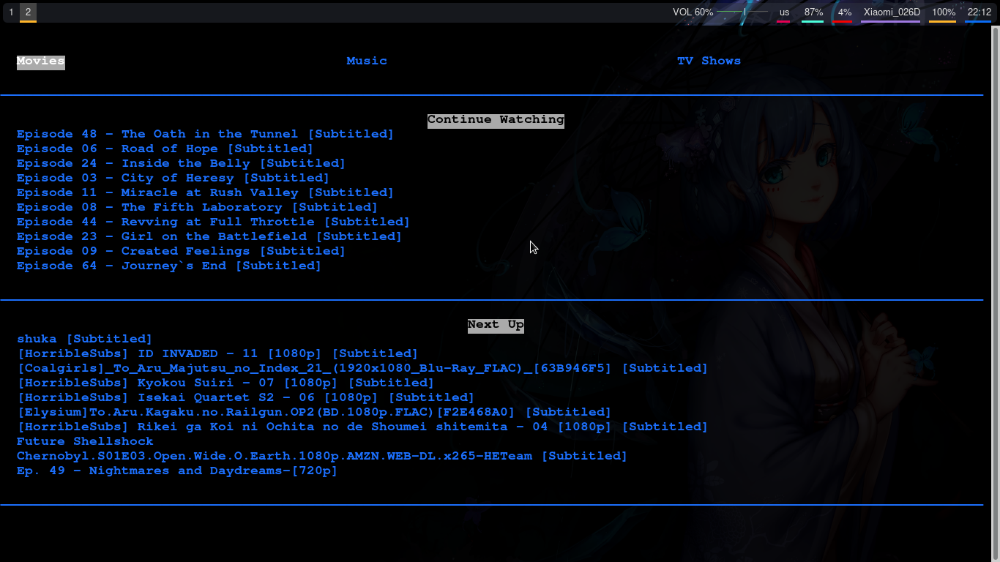

Para que Jellyfin sea del todo perfecto, sería necesario el poder reproducir el contenido multimedia desde mi Escritorio de un modo instantáneo y súper ligero.
Ya os hablé de una aplicación de Jellyfin desarrollada en Electron, pero Electron no se caracteriza por su ligereza.

Para mí, la aplicación perfecta sería aquella que hiciera uso de VLC o MPV para reproducir en streaming, del mismo modo que hago con mi Android TV y FireStick.
El desarrollador Griego marios8543, ha creado esta joya, jellyfin-cli.
Jellyfin-cli es un cliente para terminal escrito en Python con urwid.
Desde nuestra terminal, accedemos a través de los menús de Jellyfin hasta encontrar el contenido multimedia que queremos reproducir. MPV, VLC, o cualquier otro reproductor que permita la reproducción en streaming, se abrirá para reproducirlo.

Para mi es ya mi aplicación de escritorio favorita de Jellyfin.
Vamos a ver como instalarla, veréis que es muy sencillo.
git clone https://github.com/marios8543/Jellyfin-CLI.git
cd Jellyfin-CLI
pip3 install --user jellyfin-cli
También podemos instalarlo como sudo. Lo instalaríamos así:
sudo pip3 install -r requirements.txt
Vamos a ejecutar jellyfin-cli:
python3 jellyfin-cli
Ahora Jellyfin-cli nos pedirá:
Los atajos de teclado disponibles en esta aplicación, son muy sencillos:
Para cambiar el reproductor por defecto, en mi caso VLC:
PLAYER_PATH="/usr/bin/vlc"
Tengo que deciros que esta opción está en el repositorio de Jellyfin-cli, pero a mi no me ha funcionado.
Imágen de Jellyfin-cli del repositorio.
Publicado por Angel el Monday 09 March del 2020
También te puede interesar:
Powered by org-bash-blog
Written in OrgMode with Emacs and converted to HTML with Pandoc

Este obra está bajo una licencia de Creative Commons Reconocimiento-NoComercial-CompartirIgual 4.0 Internacional.